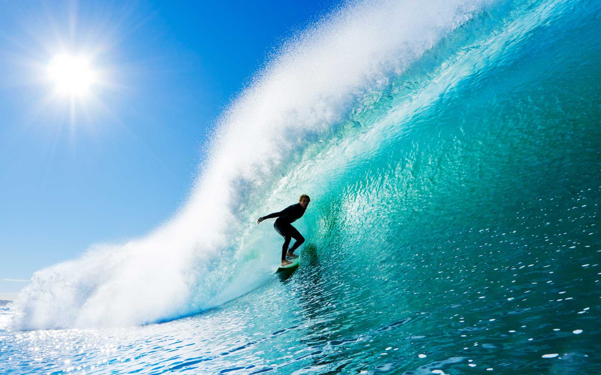

Surf werkweek

We gingen op zondagavond om 20 uur weg. De bus rit duurde ongeveer 15 uur. Op maandag rond 13 uur kwamen we aan in Crozon in Britagne. Toen we aankwamen gingen we gelijk naar ons huisje. De huisjes waren voor maximaal 6 peronnen, maar wij zaten met z'n vieren in een huisje. Anders moesten er 2 op de bankbed slapen en hadden we geen binnen bank en tafel. Er waren 4 leeraren van school mee die ook gingen surfen. We gingen donderdagavond om 20 uur weer weg en waren op vrijdag rond 13 uur weer in Amsterdam.
SearchWe hebben alle dagen dat we daar waren gesurft. Soms hadden we maar 1 keer en soms 2 keer per dag gesurft. 1 surf sessie duurde 2,5 uur. Er waren 5 groepjes van 8 leerlingen en 1 leeraar. De surf leraren zorge ook voor het eten.
Op de derde dag hadden we en wanderling gedaan over de duinen. Die was een uur lang. Na de wandeling kwam de bus ons ophalen bij het einde en zijn we naar een supermarkt gegaan om inkopen te doen voor de kookwedstrijd. Daar hadden we ongevver een uur voor en we gingen daarna terug naar de camping om te gaan koken.
De laatste avond hadden we een kook wedstrijd. Ieder huisje maakte zelf een hoofd gerecht met een voor of na gerechtje er bij. Wij haddden als hoofgerecht risotto met champions gemaakt. Die was erg goed gelukt en lekker. Als toetje hadden we 2 bolletjes passievrucht ijs helemaal bedekt met melkchocola en met wittechocola er op, omringt met rood fruit. We hadden de kook wedstrijd gewonnen en de hoofdprijs gekregen.